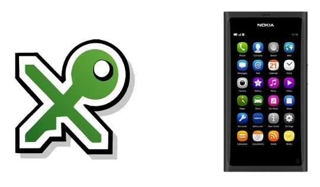

The N9, QR-Codes, and KeePassX
Update: I happened across a KeePass plugin (not the same as KeePassX) that displays passwords as QR codes, just like my hack below.
Poor, glorious N9.
It’s impossible not to love the N9 if you’re a geek, especially a programming, bash-loving, Linux-hankering geek. It’s like a nerd talisman. This post isn’t about the N9, specifically, so I’ll save the love-fest for another time.
This post is about how difficult it can be to get text (especially passwords) onto a smartphone securely. I’ve come to like the approach of using QR codes. Most (all?) smartphones have a barcode scanner, and QR codes are one of many convenient ways to encode text into an image. In the case of the N9, it’s MeeScan.

qrencode is an extremely easy to use encoder. Pass it a string, it produces an image.
qrencode "mypassword" -o mypass.png
KeePassX is an excellent password manager. Unfortunately…

Sadly, there is no KeePassX client on the N9. At least, not yet. Even if there were, I’m skeptical that it’s a good idea at all to be carrying around a database of personal passwords on a smartphone. It’s encrypted, sure, but touchscreen keyboards encourage weak passphrases. Who wants to enter a 64+ character passphrase on a vkbd?
This evening, I spent about an hour hacking QR-code support into KeePassX.
It’s a seriously messy hack, using
system() to call
qrencode, pass in the password, then call
evince to view it. Even worse, I
just tacked it onto the “Copy Password” function, instead of figuring out how
to create a new menu item. It doesn’t even delete the generated image after
viewing. Definitely nothing more than a proof of concept.
Here it is in action.
{kind=link}
I won’t be distributing my mod unless someone really wants it, but it would be cool to see this available as plugin to any password managers that support plugins. It could be handy to have clipboard managers generate QR codes too.